Years after the bio-arm war that plagued our nations, we discovered survivors. However, these humans do not communicate verbally or physically. In order to assess their capabilities, we studied two inhabitants in our temporary facility. To instigate interaction, we had to create an intervention artefact designed for them to wear.
neo-TCH 1.3 Case Study
Video footage of the experiments run observing how the test subjects interact with neo-TCH 1.3 and one another.
In Depth Analysis *
neo-TCH 1.3 with the test subjects
neo-TCH 1.3 enables non-verbal communication

sensor built with recognisable forms to acclimate subjects

subject’s reluctance to neo-TCH 1.3 decreases slowly

neo-TCH 1.3 has sensors across the bodies to keep subjects engaged
subject’s still show reluctance to proximity after
neo-TCH 1.3 experiment ends
* Experiment unsuccessful. Further testing required.
Interaction Model 1.0

Interaction Model 1.1

Interaction Model 1.2

Circuit Design
  Appendix
Additional documentation from the experiment: images